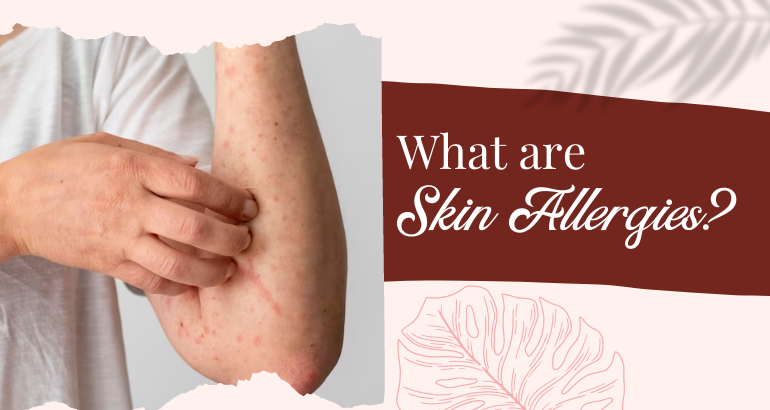
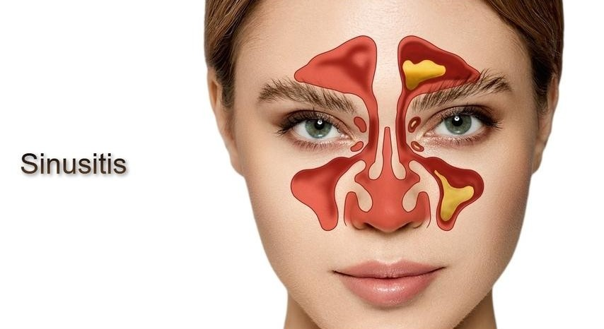
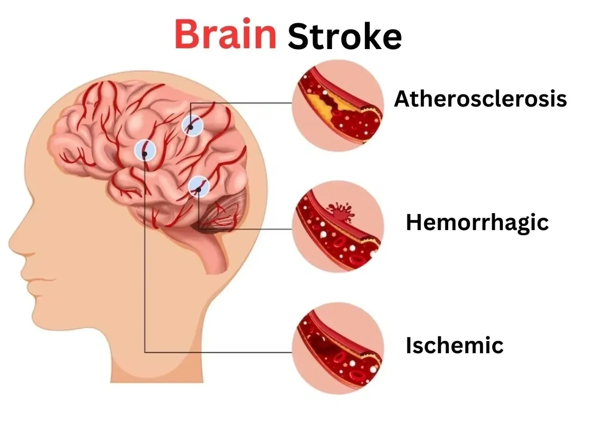
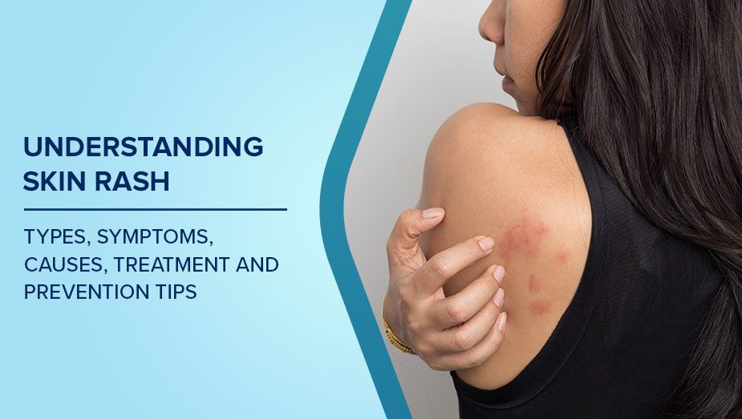

Skin Allergy
- About: Allergic reaction affecting the skin.
- Symptoms: Rash, itching, swelling, redness.
- Do's: Apply anti-allergy creams, use mild soap.
- Don'ts: Avoid scratching or using harsh chemicals.
- Precautions: Identify triggers, keep skin hydrated.
- Concern: If the rash spreads or worsens.

Sinusitis
- About: Inflammation of sinuses causing congestion and pain.
- Symptoms: Headache, blocked nose, facial pain.
- Do's: Use steam, nasal sprays, stay hydrated.
- Don'ts: Avoid allergens and smoking.
- Precautions: Humid air, manage allergies.
- Concern: Symptoms persist over 10 days.

Stroke (Brain Attack)
- About: Interruption of blood supply to the brain causing brain cell death.
- Symptoms: Sudden weakness, speech trouble, facial drooping.
- Do's: Act FAST (Face, Arms, Speech, Time), call emergency immediately.
- Don'ts: Don’t ignore mild symptoms or delay medical help.
- Precautions: Control blood pressure, diabetes, and cholesterol.
- Concern: Immediately at first sign of weakness or confusion.

Skin Rashes
- About: Visible changes on the skin such as redness, swelling, or bumps.
- Symptoms: Red patches, itching, dryness, or irritation.
- Do's: Keep area clean and dry, apply doctor-prescribed creams.
- Don'ts: Don’t scratch the rash or use harsh products.
- Precautions: Avoid allergens, use gentle skin products, wear breathable clothes.
- Concern: Rash spreads, blisters, or shows signs of infection.
Thyroid Disorders
- About: Hormonal imbalance due to thyroid dysfunction.
- Symptoms: Weight gain/loss, fatigue, hair thinning.
- Do's: Follow prescribed medication, regular checkups.
- Don'ts: Don’t skip medicines or self-adjust dose.
- Precautions: Monitor hormone levels regularly.
- Concern: Irregular heartbeat, severe fatigue, swelling.